UniArts is a decentralized incubation system for artists and art collectors.
UniArts is a blockchain network developed with Substrate which provides NFT infrastructure, community voting incentives, DAO curation, and art grants, with an end goal of the democratization of art.
more
more
UniArts builds a decentralized NFT gallery to not only feature established artists, but also to serve as a platform to exhibit and promote artwork that is loved by the community.